คู่มือใช้งานเครื่องมือ · ระดับ Free
ตรวจหอระบายความร้อน
Cooling Tower Audit Tool
FREE
สำหรับช่างเทคนิคที่เพิ่งเริ่มงาน — อ่านแล้วทำตามได้เอง
ใช้เวลาฝึกประมาณ 60 นาที
เคสตัวอย่าง: โรงงาน A หอ CT-101 น้ำหมุนเวียน 500 m³/h อุณหภูมิ 37 → 29 °C
อ.หนึ่ง กลับทวี / Aj. Nueng Klubtavee
tripleeenergytools.com
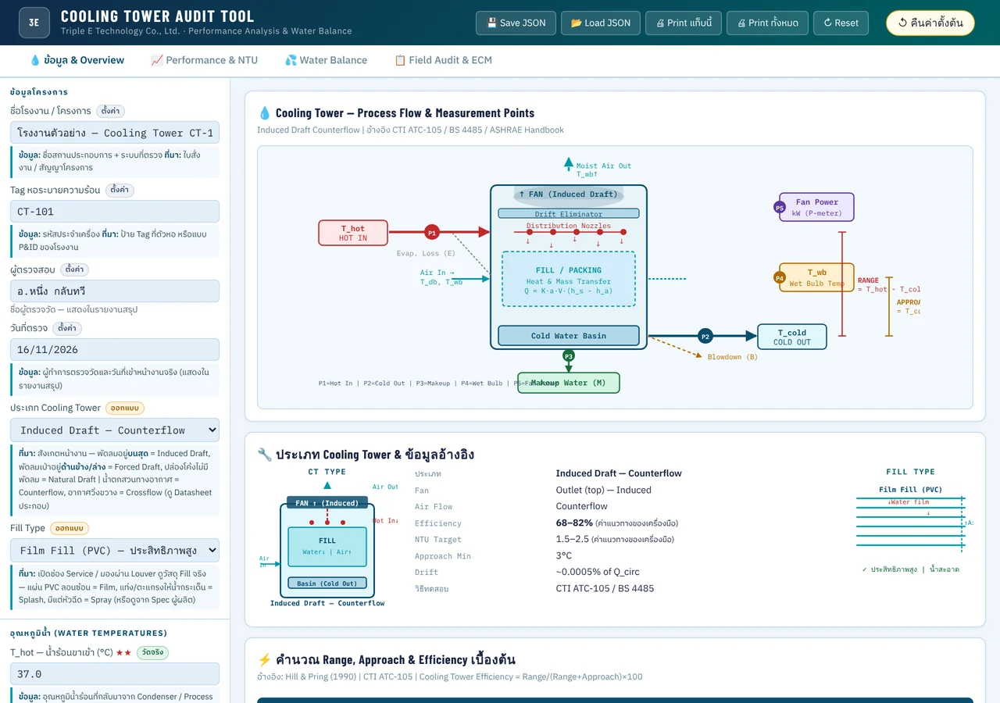
หน้าจอเครื่องมือ — เปิดได้จากเมนู Free ของเว็บไซต์
รุ่นเครื่องมือ: Free commit 28cbdbf · จับภาพ 25 พ.ย. 2569 · คู่มือ Rev01
เครื่องมือนี้ตอบคำถามอะไร
คู่มือใช้งาน · ตรวจประเมินหอระบายความร้อน (Cooling Tower Audit Tool) · ระดับ Free
2 / 35
| คำถามหน้างาน | ใช้แท็บไหน | เคสโรงงาน A ได้ |
|---|---|---|
| หอนี้ลดอุณหภูมิน้ำได้ดีแค่ไหน ผ่านเกณฑ์ไหม | ข้อมูล & Overview | ประสิทธิภาพ 69.6 % |
| หอระบายความร้อนได้เท่าไร | Performance & NTU | 4,651 kW = 1,322 ตัน |
| ลมกับน้ำสมดุลกันไหม ตัวหอยังดีอยู่ไหม | Performance & NTU | L/G 1.21 · NTU 1.829 |
| พัดลมและปั๊มกินไฟเท่าไรต่อความร้อนที่ระบาย | Performance & NTU | 0.041 kW/ตัน |
| ใช้น้ำเติมปีละเท่าไร ลดได้ไหม | Water Balance | 60,498 m³/ปี |
| หน้างานต้องตรวจและจดอะไร ควรทำมาตรการไหน | Field Audit & ECM | รายการตรวจ + ตารางจดค่า |
💡 เคล็ดลับ
กรอกแถบซ้ายให้ครบก่อน แล้วไล่แท็บจากซ้ายไปขวา กดปุ่มคำนวณของแต่ละแท็บ
แผนที่หน้าจอ
คู่มือใช้งาน · ตรวจประเมินหอระบายความร้อน (Cooling Tower Audit Tool) · ระดับ Free
3 / 35
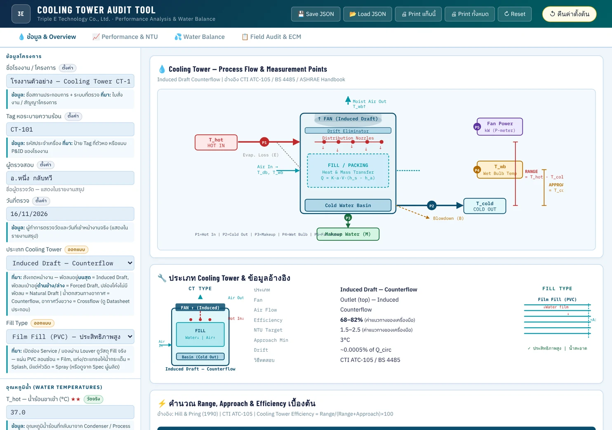
1
2
3
4
5
1
บันทึก/โหลด JSON · พิมพ์ · Reset
2
คืนค่าตั้งต้น — ล้างทุกช่องกลับเป็นตัวอย่าง
3
แท็บ 4 แท็บ เรียงตามลำดับงาน
4
แถบซ้าย: ช่องกรอกทั้งหมดอยู่ที่นี่ แบ่ง 7 หมวด
5
แผนภาพหอระบายความร้อนและจุดวัด
💡 เคล็ดลับ
เครื่องมือนี้กรอกที่เดียวคือแถบซ้าย — พื้นที่ด้านขวามีแต่ปุ่มคำนวณและผลลัพธ์
เปิดบนมือถือ สลับภาษา และป้ายสีข้างชื่อช่อง
คู่มือใช้งาน · ตรวจประเมินหอระบายความร้อน (Cooling Tower Audit Tool) · ระดับ Free
4 / 35
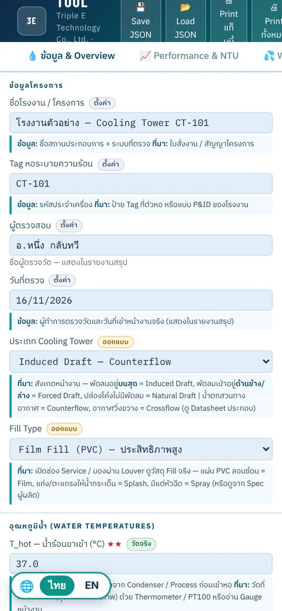
ใช้บนมือถือหน้างานได้ — แถบซ้ายจะย้ายขึ้นไปอยู่ด้านบน ตามด้วยผลลัพธ์
ปุ่ม 🌐 ไทย | EN ลอยอยู่ด้านล่าง กดสลับภาษาได้ ค่าที่กรอกไว้ไม่หาย
ป้าย วัดจริง = ต้องวัดหน้างาน · ออกแบบ = อ่านจากป้ายหอ/แบบ · ตั้งค่า = สมมติฐานที่เลือกเอง
ใต้ทุกช่องมีคำอธิบายสีเทา บอกเครื่องมือวัดและช่วงค่าปกติ
💡 เคล็ดลับ
จดค่าลงแบบฟอร์ม (สไลด์ 6) ที่หน้างานก่อน แล้วค่อยกรอก จะผิดน้อยกว่า
คำศัพท์ 6 คำที่ต้องรู้ก่อนเริ่ม
คู่มือใช้งาน · ตรวจประเมินหอระบายความร้อน (Cooling Tower Audit Tool) · ระดับ Free
5 / 35
| คำ | ความหมายแบบสั้น | จำง่าย ๆ |
|---|---|---|
| กระเปาะเปียก (WB) | อุณหภูมิต่ำสุดที่น้ำจะเย็นลงได้ด้วยการระเหย ขึ้นกับความชื้นอากาศ | เพดานของหอทุกตัว |
| Range | น้ำร้อนเข้าหอ − น้ำเย็นออกจากหอ | หอลดอุณหภูมิได้กี่องศา |
| Approach | น้ำเย็นออกจากหอ − กระเปาะเปียก | ยิ่งน้อยหอยิ่งดี |
| ประสิทธิภาพหอ | Range ÷ (Range + Approach) | ใกล้ 100 % = น้ำเย็นเกือบถึงกระเปาะเปียก |
| L/G | มวลน้ำ ÷ มวลอากาศที่ผ่านหอ | ลมน้อยไป L/G สูง หอทำงานไม่เต็ม |
| COC | ความเข้มข้นน้ำหมุนเวียน ÷ น้ำเติม (วัดจากค่าการนำไฟฟ้า) | COC ต่ำ = ทิ้งน้ำมากเกิน |
💡 เคล็ดลับ
เกณฑ์ที่เครื่องมือใช้ตัดสินแก้ได้ในแท็บ Field Audit — ค่าตั้งต้นเป็นค่าแนวทางของเครื่องมือ ไม่ใช่เกณฑ์ตามมาตรฐาน
เตรียมข้อมูลก่อนลงหน้างาน (แบบฟอร์มจดค่า)
คู่มือใช้งาน · ตรวจประเมินหอระบายความร้อน (Cooling Tower Audit Tool) · ระดับ Free
6 / 35
| หมวดในแถบซ้าย | ข้อมูลที่ต้องจด | เครื่องมือวัด / แหล่งข้อมูล | ค่าโรงงาน A |
|---|---|---|---|
| อุณหภูมิน้ำ | น้ำร้อนเข้าหอ · น้ำเย็นออกจากหอ | เทอร์โมมิเตอร์ที่ท่อเข้าและอ่างน้ำ | 37.0 · 29.0 °C |
| อุณหภูมิอากาศ | กระเปาะเปียก · กระเปาะแห้ง ของอากาศเข้าหอ | ไซโครมิเตอร์ / เทอร์โม-ไฮโกรมิเตอร์ | 25.5 · 33.0 °C |
| อัตราการไหล | น้ำหมุนเวียน · ลมผ่านหอ (ถ้าวัดได้) | Flow meter · เครื่องวัดความเร็วลม | 500 m³/h · 100 m³/s |
| กำลังไฟฟ้า | พัดลม: จำนวน · พิกัด · ที่วัดได้ · ปั๊มน้ำ · ชั่วโมงใช้งาน | Power meter · ป้ายมอเตอร์ | 2 ตัว · 37 · 32 kW · 22 kW · 7,000 ชม. |
| คุณภาพน้ำ | ค่าการนำไฟฟ้าน้ำหมุนเวียนและน้ำเติม · pH · ความกระด้าง | เครื่องวัด conductivity / pH · ผลแล็บ | 1,200 · 350 µS/cm · 7.8 · 400 |
| Design | ขนาดตามป้าย · อุณหภูมิออกแบบ · ค่าไฟ · ค่าน้ำ | ป้ายหอ · บิล | 1,320 ตัน · 4.50 · 25 บาท |
⚠️ ระวัง
ห้ามเข้าใกล้พัดลมและชิ้นส่วนหมุนขณะเดินเครื่อง · การวัดไฟฟ้าให้ช่างไฟฟ้าผู้รับผิดชอบเป็นคนทำ · ละอองน้ำจากหออาจมีเชื้อ ให้สวมหน้ากากเมื่อทำงานใกล้หอ
ขั้นที่ 1
แถบซ้าย: ข้อมูลหอ และชนิดของหอ
คู่มือใช้งาน · ตรวจประเมินหอระบายความร้อน (Cooling Tower Audit Tool) · ระดับ Free
7 / 35
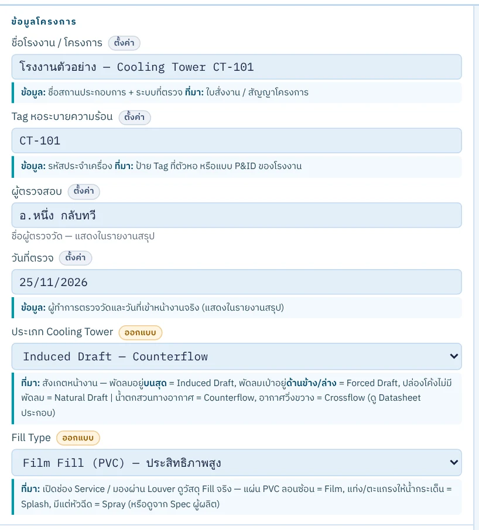
1
2
3
4
5
1
ชื่อโรงงาน/โครงการ — ขึ้นหัวรายงาน
2
หมายเลขหอ เช่น CT-101
3
วันที่ตรวจ
4
ชนิดหอ — พัดลมดูด/เป่า · ลมสวน/ลมขวาง — เกณฑ์ประสิทธิภาพเปลี่ยนตามชนิด
5
ชนิดแผงกระจายน้ำ (fill)
ดูชนิดหอจากตำแหน่งพัดลม: อยู่ด้านบนดูดลมขึ้น = Induced Draft · อยู่ด้านข้างเป่าลมเข้า = Forced Draft
เลือกชนิดแล้วแท็บแรกจะแสดงภาพและช่วงค่าทั่วไปของหอชนิดนั้น
ขั้นที่ 2
แถบซ้าย: อุณหภูมิน้ำและอากาศ
คู่มือใช้งาน · ตรวจประเมินหอระบายความร้อน (Cooling Tower Audit Tool) · ระดับ Free
8 / 35
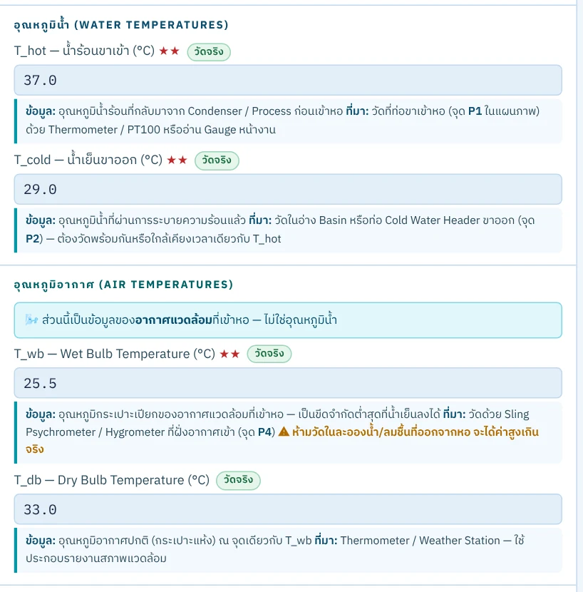
1
2
3
4
1
น้ำร้อนเข้าหอ (°C)
2
น้ำเย็นออกจากหอ (°C)
3
กระเปาะเปียกของอากาศเข้าหอ (°C) — ค่าที่มีผลต่อคำตอบมากที่สุด
4
กระเปาะแห้งของอากาศเข้าหอ (°C)
วัดอากาศที่ช่องลมเข้าของหอ ในที่ร่ม ห่างจากละอองน้ำ — ไม่ใช่ค่าจากสถานีอุตุนิยมวิทยา
วัดทั้ง 3 ค่าช่วงเวลาเดียวกัน ขณะโหลดคงที่อย่างน้อย 15 นาที
ขั้นที่ 3
แถบซ้าย: อัตราการไหลของน้ำและลม
คู่มือใช้งาน · ตรวจประเมินหอระบายความร้อน (Cooling Tower Audit Tool) · ระดับ Free
9 / 35
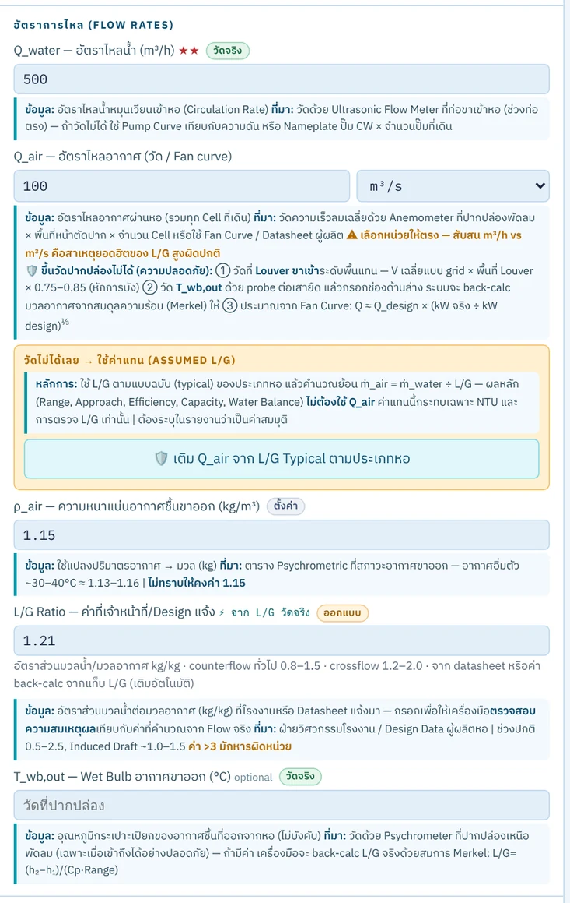
1
2
3
4
5
6
1
น้ำหมุนเวียน (m³/h)
2
ปริมาณลมผ่านหอ — วัดไม่ได้ให้ใช้ปุ่มเติมค่าจาก L/G ทั่วไป
3
หน่วยของปริมาณลม
4
ความหนาแน่นอากาศที่ใช้แปลงหน่วย
5
L/G ที่ใช้คำนวณ — ไม่ทราบใช้ค่าตั้งต้น
6
กระเปาะเปียกของลมออกจากหอ (ถ้าวัดได้) — ใช้คำนวณ L/G ย้อนกลับ
ไม่มี flow meter: ประมาณน้ำหมุนเวียนจากกราฟปั๊มและความดันที่วัดได้ แล้วระบุในรายงานว่าเป็นค่าประมาณ
ขั้นที่ 4
แถบซ้าย: กำลังไฟฟ้าพัดลมและปั๊ม
คู่มือใช้งาน · ตรวจประเมินหอระบายความร้อน (Cooling Tower Audit Tool) · ระดับ Free
10 / 35
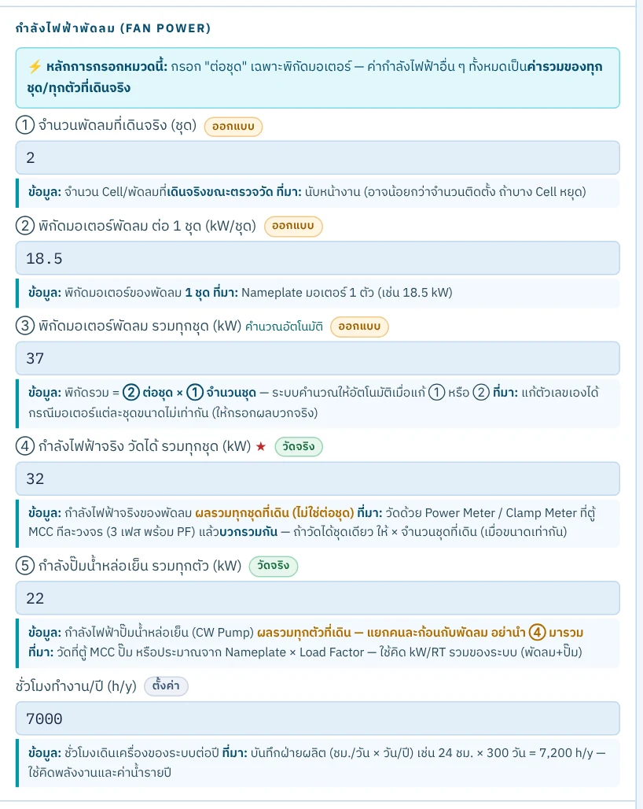
1
2
3
4
5
6
1
จำนวนพัดลม
2
กำลังพิกัดต่อตัว (kW)
3
กำลังพิกัดรวม (kW)
4
กำลังไฟฟ้าพัดลมที่วัดได้รวม (kW)
5
กำลังไฟฟ้าปั๊มน้ำหล่อเย็น (kW)
6
ชั่วโมงใช้งานต่อปี
ใช้ค่าจาก power meter — ถ้ามีแต่กระแส ให้ช่างไฟฟ้าคำนวณ kW จากแรงดัน กระแส และ power factor
ขั้นที่ 5
แถบซ้าย: คุณภาพน้ำ
คู่มือใช้งาน · ตรวจประเมินหอระบายความร้อน (Cooling Tower Audit Tool) · ระดับ Free
11 / 35
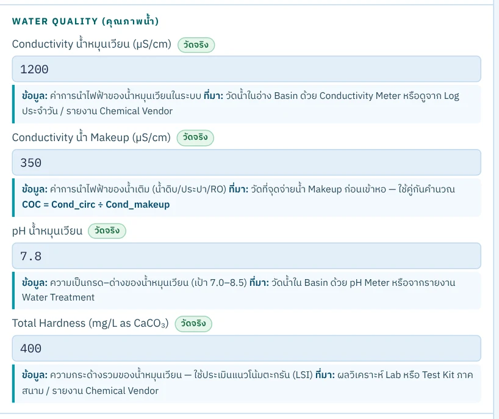
1
2
3
4
1
ค่าการนำไฟฟ้าของน้ำหมุนเวียน (µS/cm)
2
ค่าการนำไฟฟ้าของน้ำเติม (µS/cm)
3
pH ของน้ำหมุนเวียน
4
ความกระด้างรวม (mg/L as CaCO₃)
สองค่าแรกหารกันได้ COC — ใช้เครื่องวัดเครื่องเดียวกัน วัดวันเดียวกัน
ตักน้ำหมุนเวียนจากอ่างน้ำของหอ ไม่ใช่จากจุดใกล้ท่อน้ำเติม
ขั้นที่ 6
แถบซ้าย: ข้อมูลออกแบบ ค่าไฟ และค่าน้ำ
คู่มือใช้งาน · ตรวจประเมินหอระบายความร้อน (Cooling Tower Audit Tool) · ระดับ Free
12 / 35
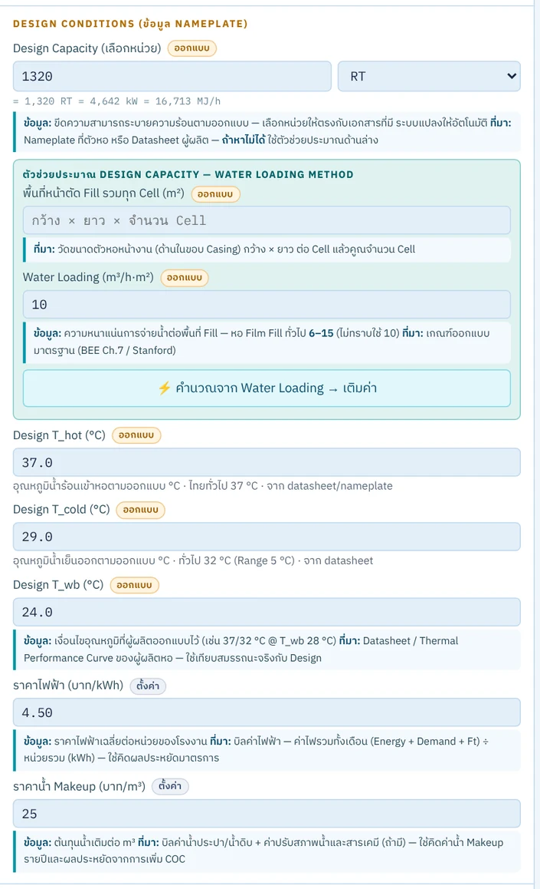
1
2
3
4
5
6
1
ขนาดตามป้ายหอ — เลือกหน่วยได้ (RT · kW · MJ/h · kcal/h)
2
พื้นที่ fill (m²) — ใช้ประมาณขนาดเมื่อไม่มีป้าย
3
อุณหภูมิน้ำตามออกแบบ (°C)
4
กระเปาะเปียกตามออกแบบ (°C)
5
ค่าไฟฟ้า (บาท/kWh)
6
ค่าน้ำ (บาท/m³) — รวมค่าบำบัดถ้ามี
ป้ายหอหาย: กรอกพื้นที่ fill แล้วกดปุ่ม คำนวณจาก Water Loading เครื่องมือจะประมาณขนาดให้ (เป็นค่าประมาณ)
แท็บแรก: แผนภาพหอและจุดวัด
คู่มือใช้งาน · ตรวจประเมินหอระบายความร้อน (Cooling Tower Audit Tool) · ระดับ Free
13 / 35
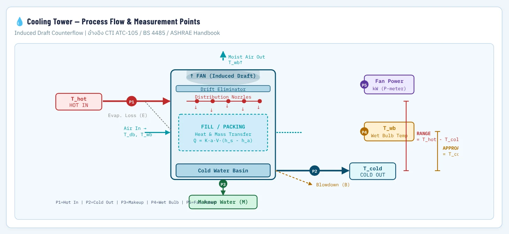
น้ำร้อนเข้าด้านบน โปรยผ่านแผง fill สวนกับอากาศ แล้วตกลงอ่างเป็นน้ำเย็น
ความร้อนส่วนใหญ่ถูกพาออกด้วยการระเหยของน้ำ — จึงต้องมีน้ำเติมตลอด
จุดวัดบนภาพตรงกับช่องในแถบซ้าย — ใช้ภาพนี้วางแผนว่าจะวัดอะไรที่ไหน
💡 เคล็ดลับ
การ์ดถัดลงไปแสดงชนิดหอและชนิด fill ที่เลือก พร้อมช่วงค่าทั่วไป (ค่าแนวทางของเครื่องมือ)
ขั้นที่ 7
คำนวณพื้นฐาน: Range · Approach · ประสิทธิภาพ
คู่มือใช้งาน · ตรวจประเมินหอระบายความร้อน (Cooling Tower Audit Tool) · ระดับ Free
14 / 35
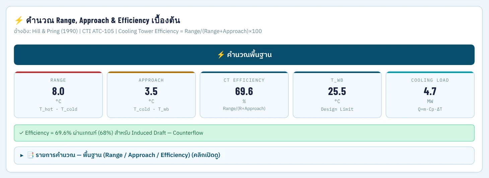
1
2
3
4
5
1
กด คำนวณพื้นฐาน
2
Range 8.0 °C = 37.0 − 29.0
3
Approach 3.5 °C = 29.0 − 25.5
4
ประสิทธิภาพหอ 69.6 % = 8.0 ÷ (8.0 + 3.5)
5
ความร้อนที่ระบาย 4.7 MW
✓ Efficiency = 69.6% ผ่านเกณฑ์ (68%) สำหรับ Induced Draft — Counterflow
แถบ 📑 รายการคำนวณ ใต้ผลลัพธ์ กดเพื่อดูสูตรและตัวเลขที่แทนทีละบรรทัด
ขั้นที่ 8
แท็บ Performance: ความสามารถระบายความร้อนและ NTU
คู่มือใช้งาน · ตรวจประเมินหอระบายความร้อน (Cooling Tower Audit Tool) · ระดับ Free
15 / 35
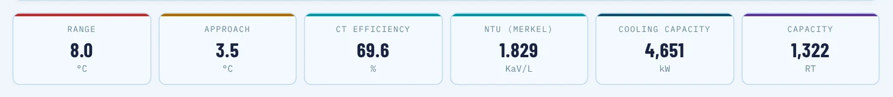
1
2
3
4
5
1
Range 8.0 °C · Approach 3.5 °C
2
ประสิทธิภาพหอ 69.6 %
3
NTU 1.829 — ตัวเลขบอกขนาดงานถ่ายเทความร้อนที่หอทำได้
4
ระบายความร้อน 4,651 kW
5
= 1,322 ตันความเย็น
กดปุ่ม คำนวณ Performance & NTU ที่การ์ดบนสุดของแท็บ แถวตัวเลขนี้จะขึ้นใต้การ์ด L/G
NTU ของหอเดิมที่ลดลงเมื่อเทียบกับครั้งก่อน (ที่ L/G ใกล้กัน) แปลว่า fill อุดตันหรือน้ำกระจายไม่ทั่ว
ช่วง NTU ที่เครื่องมือใช้เทียบ 1.5–2.5 เป็นค่าแนวทางของเครื่องมือ
ตรวจสมดุลลมกับน้ำ (L/G)
คู่มือใช้งาน · ตรวจประเมินหอระบายความร้อน (Cooling Tower Audit Tool) · ระดับ Free
16 / 35
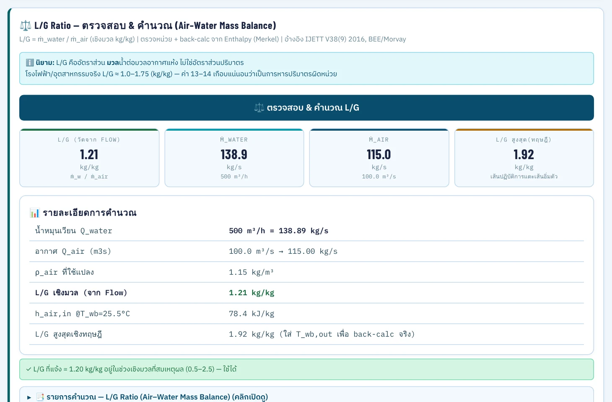
1
2
3
4
1
กด ตรวจสอบ & คำนวณ L/G
2
L/G จากค่าที่วัด 1.21
3
มวลอากาศที่ผ่านหอ (kg/s)
4
L/G สูงสุดทางทฤษฎี 1.92 — เกินค่านี้อากาศรับความร้อนไม่ไหว
✓ L/G ที่แจ้ง = 1.20 kg/kg อยู่ในช่วงเชิงมวลที่สมเหตุผล (0.5–2.5) — ใช้ได้
L/G สูงขึ้นจากเดิม = ลมน้อยลง: ตรวจใบพัด มุมใบ สายพาน และสิ่งกีดขวางช่องลม
ตารางสมรรถนะ และการเทียบเกณฑ์
คู่มือใช้งาน · ตรวจประเมินหอระบายความร้อน (Cooling Tower Audit Tool) · ระดับ Free
17 / 35
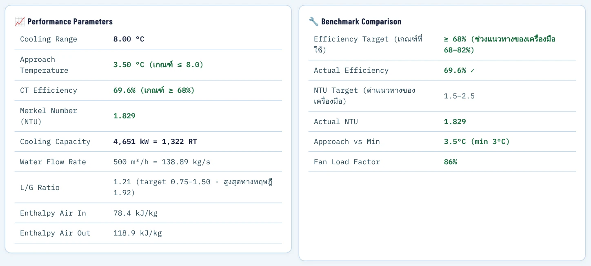
1
2
1
ค่าทั้งหมดในที่เดียว: Range · Approach · ประสิทธิภาพ · NTU · L/G 1.21 · เอนทาลปีอากาศเข้า 78.4 → ออก 118.9 kJ/kg
2
เทียบเกณฑ์: ประสิทธิภาพ · NTU · Approach · สัดส่วนกำลังพัดลม
อากาศออกจากหอมีเอนทาลปีสูงขึ้นมาก เพราะรับทั้งความร้อนและไอน้ำจากน้ำ
เกณฑ์ในตารางขวาแก้ได้ในแท็บ Field Audit (สไลด์เกณฑ์การประเมิน)
อ่านกราฟ Enthalpy / Temperature Profile
คู่มือใช้งาน · ตรวจประเมินหอระบายความร้อน (Cooling Tower Audit Tool) · ระดับ Free
18 / 35
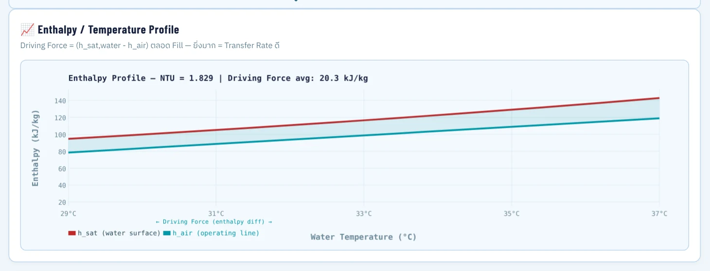
แกนนอน = อุณหภูมิน้ำจากเย็น (ล่างหอ) ไปร้อน (บนหอ)
เส้นบน = อากาศอิ่มตัวที่อุณหภูมิน้ำ · เส้นล่าง = อากาศจริงที่ไหลผ่านหอ
ช่องว่างระหว่างสองเส้น คือแรงขับการถ่ายเทความร้อน — ยิ่งกว้าง หอยิ่งทำงานง่าย
สองเส้นเข้าใกล้กันที่ปลายด้านใด แปลว่าด้านนั้นคือคอขวดของหอ
💡 เคล็ดลับ
ใช้กราฟนี้อธิบายว่าทำไมวันที่อากาศชื้น (กระเปาะเปียกสูง) น้ำจึงเย็นไม่ลง
พลังงานพัดลมและปั๊ม
คู่มือใช้งาน · ตรวจประเมินหอระบายความร้อน (Cooling Tower Audit Tool) · ระดับ Free
19 / 35
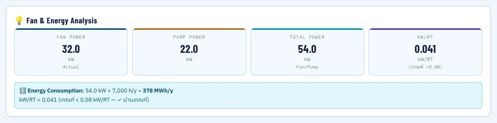
1
2
3
4
1
พัดลม 32.0 kW (วัดจริง)
2
ปั๊ม 22.0 kW
3
รวม 54.0 kW = 378 MWh/ปี
4
0.041 kW ต่อตันความเย็น — ✓ ผ่านเกณฑ์
kW/ตัน = (พัดลม + ปั๊ม) ÷ ความร้อนที่ระบาย — ใช้เทียบหอหลายตัวในโรงงานเดียวกัน
เกณฑ์ที่เทียบ (ค่าตั้งต้น 0.08) แก้ได้ในแท็บ Field Audit
ลองเปลี่ยนค่า (What-if): อะไรทำให้หอดูดีขึ้นหรือแย่ลง
คู่มือใช้งาน · ตรวจประเมินหอระบายความร้อน (Cooling Tower Audit Tool) · ระดับ Free
20 / 35
| กรณี | Range | Approach | ประสิทธิภาพ (%) | NTU | ระบายความร้อน (kW) |
|---|---|---|---|---|---|
| โรงงาน A: น้ำออก 29.0 °C · กระเปาะเปียก 25.5 °C | 8.0 | 3.5 | 69.6 | 1.829 | 4,651 |
| fill อุดตัน: น้ำออกจากหอ 31.0 °C | 6.0 | 5.5 | 52.2 | 0.857 | 3,488 |
| วันอากาศชื้น: กระเปาะเปียก 27.0 °C น้ำออกเท่าเดิม | 8.0 | 2.0 | 80.0 | 2.902 | 4,651 |
ทำเอง: แก้ค่าในแถบซ้าย → กดคำนวณทั้งสองแท็บ → จดผล → แก้กลับเป็นค่าเดิม
น้ำออกร้อนขึ้น 2 °C ประสิทธิภาพตกต่ำกว่าเกณฑ์ทันที — เครื่องมือแนะนำให้ตรวจ fill
กระเปาะเปียกสูงขึ้นแต่น้ำออกเท่าเดิม ตัวเลขประสิทธิภาพดูดีขึ้น — จึงต้องเทียบผลที่กระเปาะเปียกใกล้กันเท่านั้น
ขั้นที่ 9
แท็บ Water Balance: น้ำหายไปไหน
คู่มือใช้งาน · ตรวจประเมินหอระบายความร้อน (Cooling Tower Audit Tool) · ระดับ Free
21 / 35
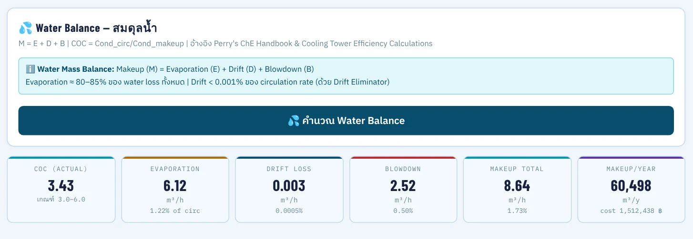
1
2
3
4
5
6
1
กด คำนวณ Water Balance
2
COC 3.43 = 1,200 ÷ 350
3
ระเหย 6.12 m³/h (1.22 % ของน้ำหมุนเวียน)
4
น้ำทิ้ง (blowdown) 2.52 m³/h
5
น้ำเติมรวม 8.64 m³/h
6
60,498 m³/ปี · 1,512,438 บาท/ปี
น้ำเติม = ระเหย + ละอองปลิว + น้ำทิ้ง — การระเหยลดไม่ได้ (คือการทำงานของหอ) ที่ลดได้คือน้ำทิ้ง
ตารางสมดุลน้ำ และเคมีของน้ำ
คู่มือใช้งาน · ตรวจประเมินหอระบายความร้อน (Cooling Tower Audit Tool) · ระดับ Free
22 / 35
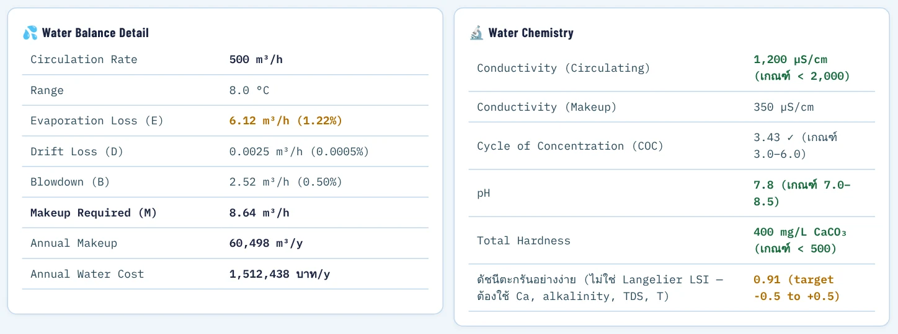
1
2
1
รายการสมดุลน้ำทีละบรรทัด — ตรวจกับมิเตอร์น้ำเติมของโรงงานได้
2
เคมีของน้ำเทียบเกณฑ์: ค่าการนำไฟฟ้า · COC · pH · ความกระด้าง
มิเตอร์น้ำเติมจริงสูงกว่าที่คำนวณมาก ให้สงสัยน้ำล้นอ่าง วาล์วลูกลอยค้าง หรือน้ำรั่ว
ดัชนีตะกรันในตารางเป็นแบบอย่างง่าย เครื่องมือเขียนกำกับว่าไม่ใช่ Langelier Index — ใช้ดูแนวโน้มเท่านั้น
⚠️ ระวัง
การปรับ COC ต้องทำร่วมกับผู้ดูแลเคมีน้ำ — COC สูงเกินไปเกิดตะกรันและการกัดกร่อน
กราฟน้ำสูญเสีย และศักยภาพประหยัดน้ำ
คู่มือใช้งาน · ตรวจประเมินหอระบายความร้อน (Cooling Tower Audit Tool) · ระดับ Free
23 / 35
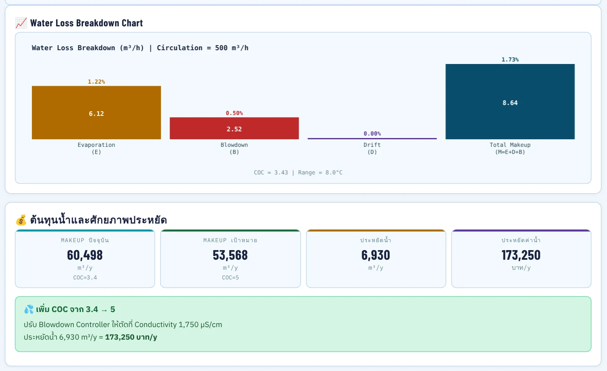
1
2
1
กราฟแบ่งน้ำเติมเป็น ระเหย · ละอองปลิว · น้ำทิ้ง
2
เพิ่ม COC เป็น 5: น้ำเติมเหลือ 53,568 m³/ปี ประหยัด 6,930 m³ = 173,250 บาท/ปี
เครื่องมือบอกค่าการนำไฟฟ้าที่ควรตั้งตัดน้ำทิ้ง (1,750 µS/cm) เพื่อให้ได้ COC 5
ลองเปลี่ยนค่า (What-if): COC กับปริมาณน้ำเติม
คู่มือใช้งาน · ตรวจประเมินหอระบายความร้อน (Cooling Tower Audit Tool) · ระดับ Free
24 / 35
| กรณี | COC | น้ำทิ้ง (m³/h) | น้ำเติม (m³/h) | น้ำเติม (m³/ปี) | ค่าน้ำ (บาท/ปี) |
|---|---|---|---|---|---|
| โรงงาน A: น้ำหมุนเวียน 1,200 µS/cm | 3.43 | 2.52 | 8.64 | 60,498 | 1,512,438 |
| ทิ้งน้ำมากเกิน: น้ำหมุนเวียน 700 µS/cm | 2.00 | 6.12 | 12.24 | 85,698 | 2,142,438 |
| คุมที่ 1,750 µS/cm | 5.00 | 1.53 | 7.65 | 53,568 | 1,339,188 |
ทำเอง: แก้ค่าการนำไฟฟ้าของน้ำหมุนเวียน → กด คำนวณ Water Balance → จดผล → แก้กลับ
COC 2 ทิ้งน้ำเท่ากับที่ระเหย — พบบ่อยเมื่อเปิดวาล์วน้ำทิ้งค้างไว้ด้วยมือ
จาก COC 3.4 ไป 5 ได้ผลน้อยกว่าจาก 2 ไป 3.4 มาก — ยิ่ง COC สูง ผลประหยัดที่เพิ่มยิ่งน้อย
ขั้นที่ 10
แท็บ Field Audit: รายการตรวจหน้างาน
คู่มือใช้งาน · ตรวจประเมินหอระบายความร้อน (Cooling Tower Audit Tool) · ระดับ Free
25 / 35
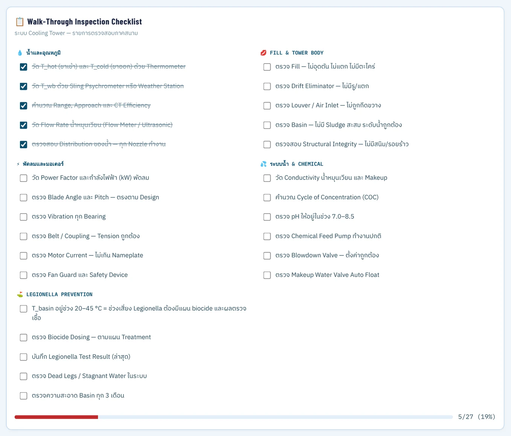
รายการเดินตรวจรอบหอ — คลิกที่ข้อเพื่อติ๊กว่าตรวจแล้ว (เคสตัวอย่างติ๊กแล้ว 5/27 ข้อ)
ครอบคลุม: แผง fill · หัวกระจายน้ำ · แผงดักละอองน้ำ · พัดลมและชุดขับ · อ่างน้ำ · ระบบน้ำเติมและน้ำทิ้ง
ใช้บนมือถือขณะเดินตรวจ แล้วพิมพ์แนบรายงาน
💡 เคล็ดลับ
ข้อที่ตรวจไม่ได้ให้เว้นไว้และจดเหตุผล — ดีกว่าติ๊กโดยไม่ได้ตรวจ
ตารางบันทึกค่าที่วัดได้ภาคสนาม
คู่มือใช้งาน · ตรวจประเมินหอระบายความร้อน (Cooling Tower Audit Tool) · ระดับ Free
26 / 35
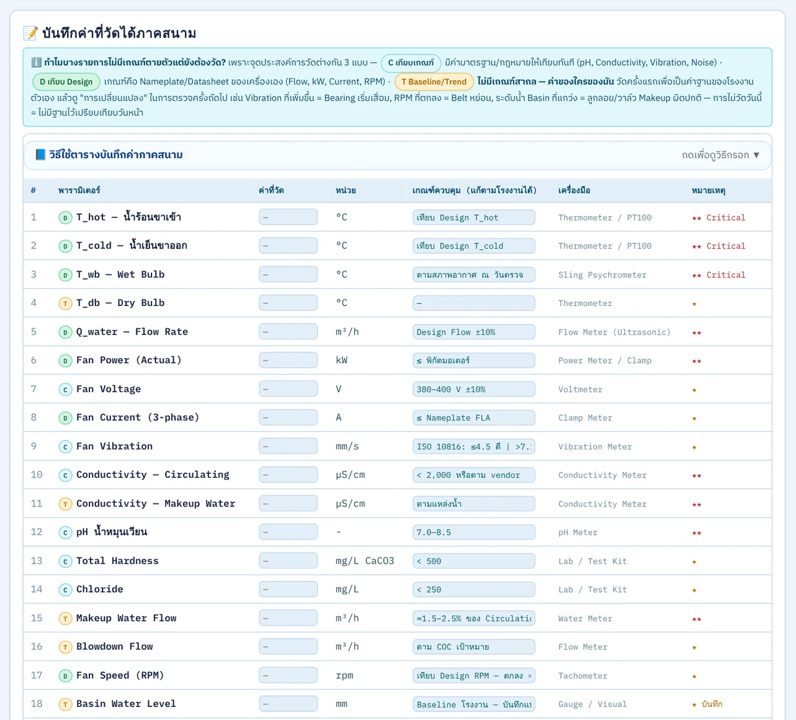
1
2
1
กดแถบนี้เพื่อเปิดวิธีใช้ตาราง
2
แต่ละแถว: ค่าที่ต้องวัด · ช่องจดค่า · หน่วย · เกณฑ์ควบคุมของโรงงาน · เครื่องมือวัด
ตารางนี้เป็นแบบฟอร์มจดค่า — ค่าที่ใช้คำนวณต้องกรอกในแถบซ้าย
ช่องเกณฑ์ควบคุมแก้เป็นค่าของโรงงานได้ และถูกบันทึกไปกับไฟล์ JSON
💡 เคล็ดลับ
ค่าที่วัดไม่ได้ให้เว้นว่างและเขียนเหตุผล — ไม่ต้องเดา
เกณฑ์การประเมิน: ปรับตามเกณฑ์ของโรงงานได้
คู่มือใช้งาน · ตรวจประเมินหอระบายความร้อน (Cooling Tower Audit Tool) · ระดับ Free
27 / 35
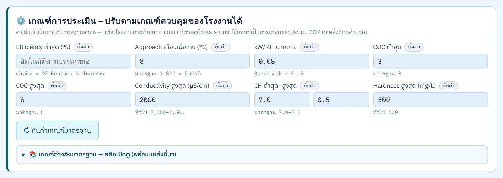
1
2
3
4
5
6
1
ประสิทธิภาพขั้นต่ำ (%) — เว้นว่าง = ใช้ค่าตามชนิดหอ
2
Approach ที่เริ่มเตือน (°C)
3
kW ต่อตันความเย็นสูงสุด
4
ช่วง COC ที่ยอมรับ
5
ค่าการนำไฟฟ้าสูงสุด และเกณฑ์เคมีน้ำอื่น ๆ
6
คืนค่าเกณฑ์มาตรฐาน — กลับไปใช้ค่าตั้งต้น
โรงงานที่มีเกณฑ์จากผู้ดูแลเคมีน้ำหรือผู้ผลิตหออยู่แล้ว ให้กรอกเกณฑ์นั้นแทนค่าตั้งต้น
แก้เกณฑ์แล้วกดคำนวณใหม่ ป้ายผ่าน/ไม่ผ่านจะเปลี่ยนตาม — ระบุในรายงานว่าใช้เกณฑ์ของใคร
ECM Recommendations และสรุปรายงาน
คู่มือใช้งาน · ตรวจประเมินหอระบายความร้อน (Cooling Tower Audit Tool) · ระดับ Free
28 / 35
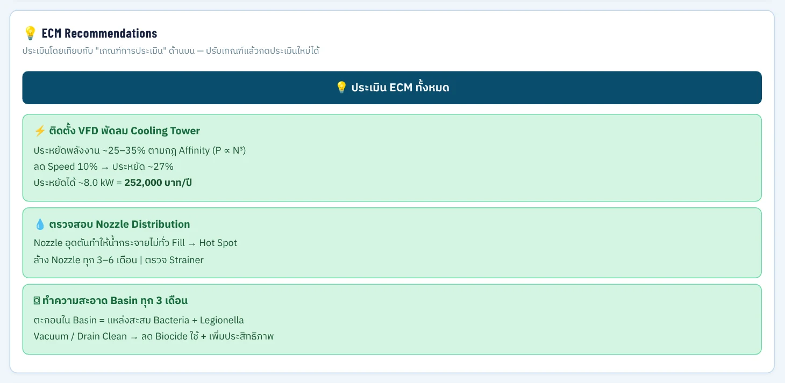
ติด VFD ที่พัดลม: ประมาณ 8.0 kW = 252,000 บาท/ปี — เหมาะกับช่วงกลางคืนและฤดูที่อากาศเย็น
มาตรการบำรุงรักษา (ล้างหัวกระจายน้ำ · ล้างอ่าง) ไม่มีตัวเลขเงิน แต่เป็นงานที่ควรทำประจำ
การ์ดถัดไปมีปุ่ม สร้างสรุปรายงาน — ได้ข้อความสรุปอุณหภูมิ สมรรถนะ และสมดุลน้ำ คัดลอกไปวางในรายงานได้
⚠️ ระวัง
ร้อยละประหยัดของ VFD เป็นค่าประมาณทั่วไป — ผลจริงขึ้นกับชั่วโมงที่ลดรอบได้ ให้ยืนยันด้วยข้อมูลโหลดและอากาศของโรงงาน
บันทึกงาน พิมพ์ และเปิดงานเดิม
คู่มือใช้งาน · ตรวจประเมินหอระบายความร้อน (Cooling Tower Audit Tool) · ระดับ Free
29 / 35
1
2
3
4
5
6
1
Save JSON — เก็บค่าที่กรอก ค่าที่จด เกณฑ์ และรายการที่ติ๊ก
2
Load JSON — เปิดไฟล์งานเดิมกลับมาทำต่อ ค่ากรอกและผล (รวม L/G Ratio · NTU) เท่าตอนบันทึก
3
Print แท็บนี้
4
Print ทั้งหมด — ทุกแท็บในครั้งเดียว (ไม่คำนวณ L/G ให้เอง)
5
Reset — ซ่อนผลลัพธ์เพื่อเริ่มคำนวณใหม่
6
คืนค่าตั้งต้น — ล้างทุกช่องกลับเป็นตัวอย่าง (บันทึก JSON ก่อนกด)
หอ 1 ตัว = ไฟล์ JSON 1 ไฟล์ — เก็บทุกครั้งที่ตรวจ จะเห็นแนวโน้ม Approach และ NTU ของหอตัวเดิม
ไฟล์งานเก็บสถานะการตรวจ L/G ไว้ด้วย (เคยกดตรวจหรือยัง · ค่าในช่อง L/G Ratio มาจากที่แจ้งหรือจาก Flow) — ดู 2 สไลด์ถัดไป
เปิดไฟล์งานแล้ว L/G Ratio และ NTU เท่าตอนบันทึก
คู่มือใช้งาน · ตรวจประเมินหอระบายความร้อน (Cooling Tower Audit Tool) · ระดับ Free
30 / 35
| ไฟล์ที่เปิด (เคสโรงงาน A) | ตอนกด Save JSON | หลังกด Load JSON |
|---|---|---|
| บันทึกก่อนกดตรวจ L/G | L/G Ratio 1.2 · NTU 1.814 | L/G Ratio 1.2 · NTU 1.814 · แท็บ L/G ไม่แสดงผล |
| บันทึกหลังกดตรวจ L/G | L/G Ratio 1.21 ⚡ · NTU 1.829 · ที่แจ้ง 1.20 | L/G Ratio 1.21 ⚡ · NTU 1.829 · ที่แจ้ง 1.20 |
| ไฟล์รุ่นก่อน (CT-101 · 10/10/2026) | ไฟล์ไม่มีสถานะ L/G | L/G Ratio 1.2 · NTU 1.226 · ไม่ตรวจ L/G ให้เอง |
เปิดไฟล์แล้วเครื่องมือไม่เขียนค่า L/G จาก Flow ทับช่อง L/G Ratio — ค่าในช่อง ป้าย ⚡ (= ค่ามาจาก L/G วัดจริง) และ NTU จึงเท่าตอนบันทึก
ไฟล์ที่บันทึกหลังกดตรวจ L/G เปิดแล้วแท็บ L/G แสดงผลเหมือนเดิม: L/G ที่แจ้ง 1.20 · วัดจาก Flow 1.21
NTU ของสองแถวแรกต่างกันเพราะค่าในช่อง L/G Ratio ต่างกัน (1.2 ที่แจ้ง กับ 1.21 จาก Flow) ไม่ใช่เพราะการเปิดไฟล์
ไฟล์รุ่นก่อน: กล่องแจ้งผลมีบรรทัดที่สองบอกว่าไม่ได้ตรวจ L/G ให้อัตโนมัติ และกดตรวจ L/G อีกครั้งได้ในแท็บ L/G
ต้องการให้ไฟล์เก็บผลตรวจ L/G: กด ตรวจสอบ & คำนวณ L/G ก่อน แล้วค่อยกด Save JSON
💡 เคล็ดลับ
ไฟล์ที่บันทึกจากเครื่องมือรุ่นก่อนเปิดได้เหมือนเดิม ค่าเท่าตอนบันทึก — ถ้าต้องการผลแท็บ L/G ให้กดตรวจ L/G อีกครั้ง
พิมพ์ทั้งหมดตอนยังไม่ได้ตรวจ L/G
คู่มือใช้งาน · ตรวจประเมินหอระบายความร้อน (Cooling Tower Audit Tool) · ระดับ Free
31 / 35
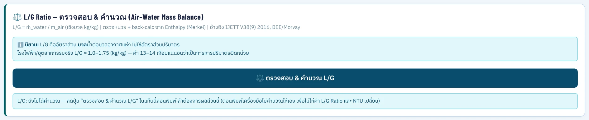
กด Print ทั้งหมด โดยยังไม่ได้กดตรวจ L/G → ส่วน L/G ในหน้าพิมพ์เขียนว่า "ยังไม่ได้คำนวณ" — เครื่องมือไม่คำนวณให้เอง
พิมพ์เสร็จหน้าจอกลับเหมือนเดิม: L/G Ratio 1.2 · NTU 1.814 — เท่าก่อนกดพิมพ์
ต้องการผล L/G ในรายงาน: กด ตรวจสอบ & คำนวณ L/G ในแท็บ Performance ก่อน แล้วค่อยกดพิมพ์
💡 เคล็ดลับ
ภาพนี้คือส่วน L/G ของหน้าพิมพ์ หลังเปิดไฟล์ที่บันทึกก่อนกดตรวจ L/G (แถวแรกของตารางในสไลด์ก่อน)
ข้อผิดพลาดที่พบบ่อย
คู่มือใช้งาน · ตรวจประเมินหอระบายความร้อน (Cooling Tower Audit Tool) · ระดับ Free
32 / 35
✗ ใช้กระเปาะแห้งแทนกระเปาะเปียก
✓ Approach คิดจากกระเปาะเปียก — ใช้กระเปาะแห้งผลผิดทั้งหมด
✗ วัดอากาศกลางแดดหรือในละอองน้ำ
✓ วัดที่ช่องลมเข้าหอ ในร่ม ห่างละอองน้ำ
✗ สลับน้ำร้อนกับน้ำเย็น
✓ น้ำร้อน = เข้าหอ (กลับจากกระบวนการ) · น้ำเย็น = ออกจากอ่าง
✗ เทียบประสิทธิภาพคนละวัน
✓ เทียบได้เฉพาะวันที่กระเปาะเปียกและโหลดใกล้กัน
✗ วัดค่าการนำไฟฟ้าคนละเครื่อง
✓ น้ำหมุนเวียนและน้ำเติมใช้เครื่องวัดเดียวกัน วันเดียวกัน
✗ ใส่กำลังพัดลมต่อตัว
✓ ช่องกำลังที่วัดได้เป็นค่ารวมทุกตัวที่เดินอยู่
✗ แก้ค่าแล้วไม่กดคำนวณ
✓ กดปุ่มคำนวณของแท็บนั้นทุกครั้งก่อนจดผล
✗ จดในตารางแล้วไม่กรอกแถบซ้าย
✓ ตารางบันทึกค่าเป็นแบบฟอร์มเท่านั้น ไม่ส่งค่าไปคำนวณ
แบบฝึกหัด: โรงงาน B หอ CT-201
คู่มือใช้งาน · ตรวจประเมินหอระบายความร้อน (Cooling Tower Audit Tool) · ระดับ Free
33 / 35
| ข้อมูล | ค่า |
|---|---|
| น้ำหมุนเวียน · ปริมาณลม | 300 m³/h · 60 m³/s |
| น้ำร้อนเข้า · น้ำเย็นออก · กระเปาะเปียก | 36.0 · 31.0 · 26.5 °C |
| พัดลม: 1 ตัว พิกัด 22 kW วัดได้ | 20 kW |
| ปั๊มน้ำหล่อเย็น | 15 kW |
| ค่าการนำไฟฟ้า: น้ำหมุนเวียน · น้ำเติม | 900 · 300 µS/cm |
| ค่าอื่นทั้งหมด | ใช้ค่าตั้งต้นของเครื่องมือ |
คำถาม — กรอกแล้วตอบ
1
Range = ____ °C · Approach = ____ °C
2
ประสิทธิภาพหอ = ______ % ผ่านเกณฑ์หรือไม่?
3
ระบายความร้อน = ______ kW · ______ kW/ตัน
4
COC = ____ · น้ำเติม = ______ m³/h
💡 เคล็ดลับ
กด "คืนค่าตั้งต้น" ก่อนเริ่ม → แก้ค่าในแถบซ้าย → กดคำนวณแท็บ 1, 2 และ 3 ตามลำดับ
เฉลยแบบฝึกหัด โรงงาน B
คู่มือใช้งาน · ตรวจประเมินหอระบายความร้อน (Cooling Tower Audit Tool) · ระดับ Free
34 / 35
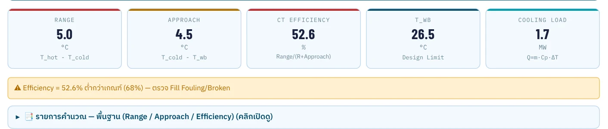
1) Range = 36.0 − 31.0 = 5.0 °C · Approach = 31.0 − 26.5 = 4.5 °C
2) ประสิทธิภาพ = 52.6 % — ⚠ Efficiency = 52.6% ต่ำกว่าเกณฑ์ (68%) — ตรวจ Fill Fouling/Broken
3) ระบายความร้อน 1,744 kW (496 ตัน) · 0.071 kW/ตัน — ✓ ผ่านเกณฑ์
4) COC = 900 ÷ 300 = 3.00 · น้ำเติม 3.44 m³/h (24,108 m³/ปี)
✓ ผ่าน
ได้ตัวเลขตรงกัน = ใช้เครื่องมือเป็นแล้ว · หอนี้ Approach กว้างและ NTU ต่ำ (0.859) — เริ่มที่ตรวจ fill และหัวกระจายน้ำ
สรุป 1 หน้า (พิมพ์ติดไว้ข้างคอมพิวเตอร์)
คู่มือใช้งาน · ตรวจประเมินหอระบายความร้อน (Cooling Tower Audit Tool) · ระดับ Free
35 / 35
1
แถบซ้าย: ชนิดหอ
ชนิดหอ · ชนิด fill
2
แถบซ้าย: อุณหภูมิ
น้ำร้อนเข้า · น้ำเย็นออก · กระเปาะเปียก
3
แถบซ้าย: การไหลและไฟฟ้า
น้ำหมุนเวียน · ลม · kW พัดลม · kW ปั๊ม
4
แถบซ้าย: คุณภาพน้ำ
ค่าการนำไฟฟ้าน้ำหมุนเวียน / น้ำเติม · pH
5
แท็บแรก
กดคำนวณ → Range · Approach · ประสิทธิภาพ
6
Performance & NTU
กดคำนวณ → NTU · kW ที่ระบาย · L/G · kW/ตัน
7
Water Balance
กดคำนวณ → COC · น้ำเติม · ศักยภาพประหยัดน้ำ
8
Field Audit & ECM
รายการตรวจ · ตารางจดค่า · เกณฑ์ · รายงาน · บันทึก JSON
อ่านผลแล้วตรวจ
☐
ประสิทธิภาพต่ำกว่าเกณฑ์ → ตรวจ fill
☐
L/G สูงขึ้น → ตรวจพัดลม
☐
COC ต่ำกว่า 3 → ทิ้งน้ำมากเกิน
☐
น้ำเติมจริงสูงกว่าคำนวณ → หาน้ำรั่ว/ล้น
อ.หนึ่ง กลับทวี / Aj. Nueng Klubtavee
tripleeenergytools.com
tripleeenergytools.com